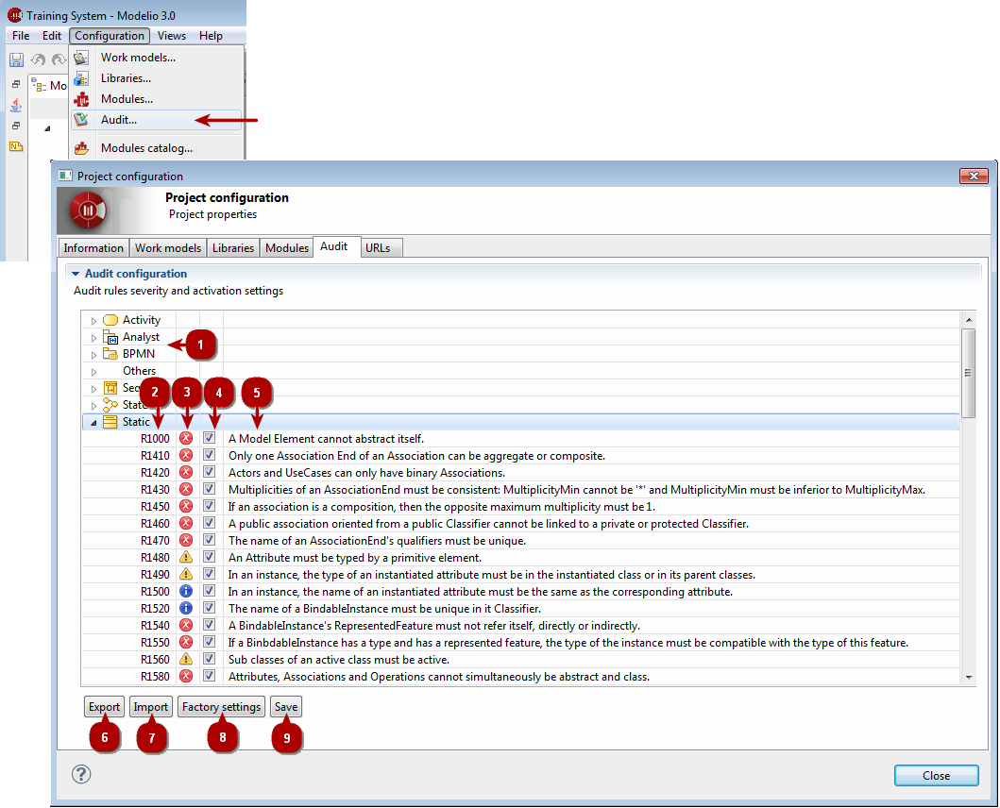

Configuring project audit¶
Modelio 3 comes with an extensive set of pre-defined audit rules to help you build sound, correct models.
Each of these rules can be enabled, disabled or configured for different severity levels.

The Audit configuration tool
Key:
- 1. Rules are organized by metaclass.
- 2. Audit rule number.
- 3. Audit rule severity. This can be set to one of Error, Warning or Advice. This is the severity of the diagnostics that this rule will produce.
- 4. This tickbox enables/disables the rule. A disable rule is never controlled and produces no diagnostics.
- 5. Rule description.
- 6. Export the current configuration into a file (for example for re-use in another project).
- 7. Import configuration from a file.
- 8. Restore factory settings.
- 9. Save Audit configuration, apply the currently displayed configuration to the project.